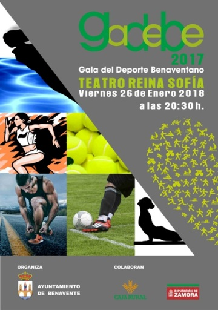
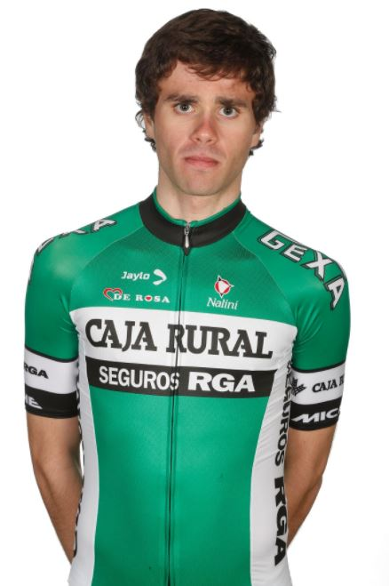
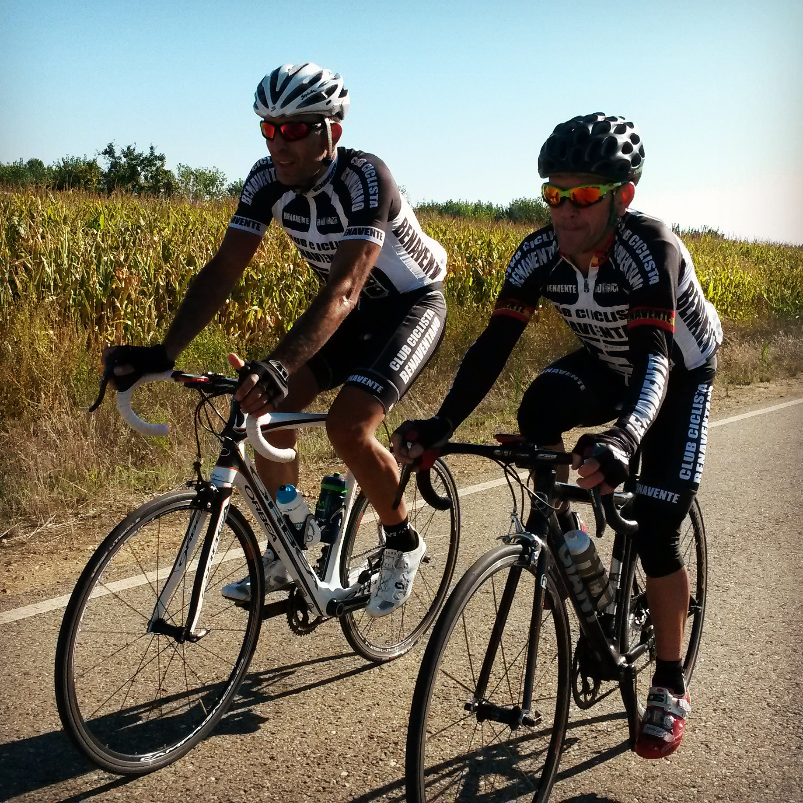
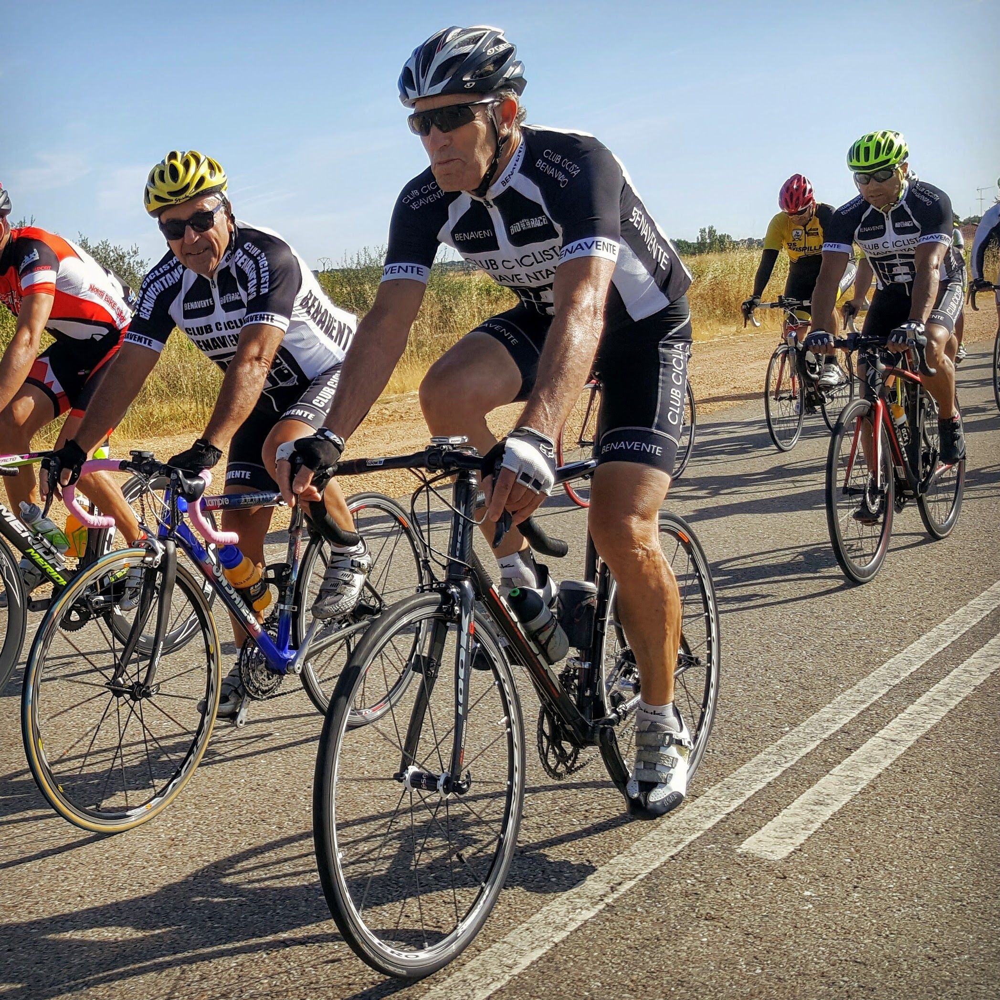

EL CLUB CICLISTA BENAVENTANO EN GADEBE 2017

El próximo viernes 26 de enero, a las 20´30h. se celebrará una nueva edición de la Gala del Deporte Benaventano, en el Teatro Reina Sofia.
Son los premios al deporte de Benavente del año 2017 en diferentes candidaturas y el Club Ciclista Benaventano opta a cuatro de esos galardones y menciones.

El ciclista de categoría Sub-23, Jorge Bueno García, natural de San Cristóbal de Entreviñas, integrante del Club Ciclista Benaventano y actualmente en las filas del equipo CAJA RURAL – SEGUROS RGA, es candidato al galardón de Mejor Deportista.

Javier Castaño Villar y Fabian García Rodríguez, ambos ciclistas Master del Club Ciclista Benaventano, son candidatos a Mejor Deportista Master.

La dilatada carrera deportiva de Francisco J. Herráez Marañón (Club Ciclista Benaventano) opta al galardón de Reconocimiento a la Trayectoria Deportiva.
Y por último Fabian García Rodríguez, tendrá una mención especial en el apartado de Deportistas Campeones de Castilla y León.